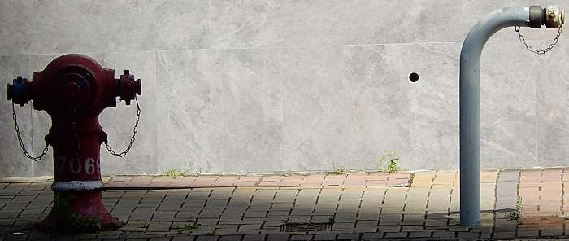
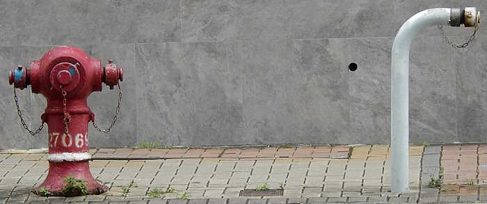
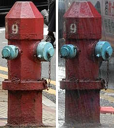
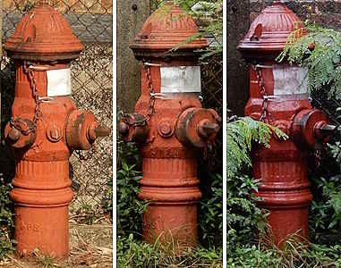
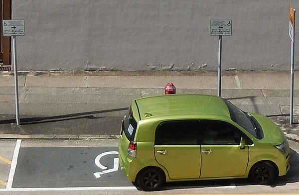
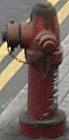
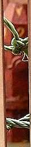
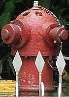

Fire hydrant photography
Disclaimer: I am not a professional photographer, nor have I done any study on photography. What I will say in this page is just me speaking from experience.
Weather
Okay, no one would want to go photograph hydrants on a rainy day, but is a sunny day the best option? It depends on the type of photo you want to take. Depending on the time of day, sunlight can make the photo's temperature warmer (looks more orange / yellow), and the hydrant might also look more orange / yellow than it really is. You also have to worry about shadows, both in terms of shadows of the hydrant casting on itself (example: the outlet nozzle's cap's shadow on the hydrant body) and whatever is near the hydrant (such as buildings). If you want a photo of a hydrant that can capture its original colour without the effect of sunlight, a "bright cloudy" day is the best for photographing hydrants (or if it is a sunny days with moving clouds, just wait for the clouds to come towards you). If it is "dark cloudy", it might rain and it can be harder to get a clear photo when there isn't enough natural light. But just in case you wonder how much of a difference weather and lighting makes, here are some examples (all the comparisons were taken with the same camera).
 |
 |
| red Round Head 27069 and an unnumbered primer grey Swan Neck - sunny vs cloudy afternoon |
| Waterloo Road opposite of Pitt Street |
| Photos taken in Y2026-M06 and M07 respectively |
| ||
| an unnumbered red AVK Model 2700 - sunny vs cloudy | ||
| Tsing Yi Heung Sze Wui Rd @ Cheung Ching Tunnel East Substation | ||
| Photos taken in Y2026-M09 and M06 respectively |
| ||
| red Octagonal hydrant 28489 (previously 48) - sunny vs cloudy | ||
| Suffolk Road near Kowloon Tong MTR station Exit A1 | ||
| Photos taken in Y2026-M08 |
 |
| red Octagonal hydrant 30089 (previously 134) - cloudy vs rainy |
| Shau Kei Wan Road at Tai Lok Street |
| Photos taken in Y2026-M07 |
 |
| A. P. Smith O'Brien (one-piece model) - sunny vs cloudy vs rainy afternoon |
| Tai Tam Tuk Raw Water Pumping Station |
| Photos taken in Y2026-M03, M08, and M07 respectively |
While photographing hydrants in the rain is questionable and challenging, doing so allows you to have photos of a hydrant with matte paint to appear "shiny", such as the A. P. Smith O'Brien at Tai Tam Tuk Raw Water Pumping Station which is matte vermilion when dry but shiny dark red when wet.
Patience
Fire hydrants are usually installed on the edge of roads on pedestrian footpaths, which means cars and pedestrians might ruin your photo if you press the shutter button at the wrong moment. Wait for cars to pass and pedestrians to walk out of frame. If your hydrant of choice is installed next to an on-street car parking / pick-up drop-off area, you might have to wait five to ten minutes for the stopped car to move out of the way. For example, I had to wait approximately seven minutes to get a good front photo of "Octagonal hydrant" 28489 because a truck driver parked their box truck in front of it to have a cigarette break. I later decided go up the building on the other side of the road to get a bird's eye photo of 28489, and I waited another ten minutes for a green car to move out of the way.
 |
| Bird's eye view of red Octagonal hydrant 28489 (previously 48) obstructed by a green car, looking down from the 1/F of Education Bureau Kowloon Tong Education Services Centre |
| Suffolk Road near Kowloon Tong MTR station Exit A1 |
| Photo taken in Y2026-M08 |
Can't reach a hydrant? Think outside the box
Fire hydrants are meant to be used by firefighters, not the general public, so you may not be able to photograph some of them simply by walking up to it. For example, the hydrant might be on a road bridge or along a highway, what will you do? For me, the answer is...to take a bus. If you sit at the front row on the upper deck, you can get some decent photos, but thats only if the front row seats are empty, so you might have to ride from the terminus. You need a camera with stabilisation, or you can try to keep your hands steady and hope the bus will not shake too much when you press the shutter button. You also have to hope that your view of the hydrant will not be obstructed by cars when you press the shutter button. For instance, during my first attempt to photograph all twenty Round Head with extended side nozzles on the North Lantau Highway, and only one photo is not obstructed and of good enough quality.
 |
| Red Round Head 258 with extended side nozzles, photographed from a moving bus |
| North Lantau Highway close to Tai Ho Wan |
| Photo taken in Y2026-M08 |
 |
| Red Round Head 4ND with one extended side nozzle, photographed from a moving bus |
| Tsing Long Highway, ~600m north of Tai Lam Tunnel bus interchange |
| Photo taken in Y2026-M07 |
 |
| AVK Model 2700, photographed from a moving bus |
| Station Perimeter Raod South (?) / ELEMENTS south carpark or Kowloon Station carpark access road |
| Photo taken in Y2026-M08 |
 |
| red "two nozzles on opposite sides variant viaduct hydrant" with viaduct hydrant caps that have four handles, photographed from a moving bus |
| East Kowloon Corridor viaduct |
| Photo taken in Y2026-M06 |
If the hydrant you want to photograph is inside a fire station, you have several options depending on its exact location within the fire station and the fire station's layout. You can wait for the gates to open when a fire engine has to be deployed somewhere / is returning from a deployment, try to find a vantage point that can look into the fire station, or find gaps between gates and see if you can photograph the hydrant from those gaps (but you will be extremely suspicious when doing so). Alternatively, you can wait and see if that fire station will be open to the public during special events in the future, which you can find out by checking this Fire Services Department webpage regularly (they seem to release details in the first ten days of the month if an open day will be held that month).
 |
| red Octagonal hydrant 30142, photographed outside the gates on Lockhard Road |
| Wan Chai Fire Station |
| Photo taken in Y2026-M07 |
 |
| red "Prototype Pedestal" 659, photographed from the unnamed up-hill road towards Lei Yue Mun Park |
| Shau Kei Wan Fire Station |
| Photo taken in Y2026-M08 |